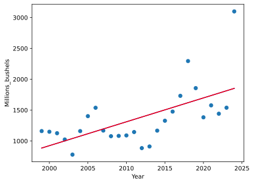

Regresión lineal: Producción estimada de cosechas

Descripción
Este gráfico representa la regresión lineal aplicada a los datos de producción de soya y maíz en Illinois. Se observa la tendencia de crecimiento de la producción en función de las condiciones ambientales y del rendimiento histórico.
Análisis adicional
Los resultados indican que la producción tiene una correlación positiva con la humedad del suelo y la temperatura promedio. Sin embargo, existen variaciones regionales que pueden afectar la precisión del modelo.